Daftar Isi
2.10.1 Data Perkiraan (Account)
3.1 Apa yang harus saya lakukan ?
3.1.1 Menjalankan Aplikasi AISO
Daftar Gambar
Gambar
1 Arsitektur Aplikasi AISO
Gambar
2 Shortcut AISO di desktop
Gambar
3 Alamat aplikasi AISO di Internet Explorer
Gambar
6 Layar pesan kesalahan
Gambar
7 Server aplikasi AISO status running.
Gambar
8 Layar kesalahan “system cannot login you”
Gambar
9 Layar kesalahan “login ID or password are invalid”
1 Informasi Umum
1.1 Aplikasi AISO
Accounting Information System
Online (AISO) digunakan
oleh bagian akunting perusahaan untuk merekam setiap transaksi keuangan yang
terjadi. AISO akan menyimpan data-data keuangan
yang mempunyai kemampuan untuk menampilkan dan mencetak data-data
tersebut dalam bentuk laporan-laporan yang diperlukan.
AISO akan mengolah bukti-bukti transaksi yang telah di
input, yang kemudian akan diproses menjadi laporan keuangan. Laporan Keuangan
ini bisa menggambarkan kondisi dan posisi keuangan perusahaan pada saat ini dan
pada saat periode tertentu.
AISO mempunyai kemampuan untuk access secara online dari jarak jauh
melalui telepon atau internet, sehingga memungkinkan seorang pemilik perusahaan
memonitor perusahaannya dari manapun melalui telepon/internet.
Gambar di bawah ini menggambarkan arsitektur aplikasi AISO :
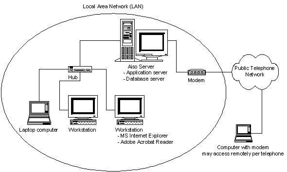
Gambar 1 Arsitektur Aplikasi AISO
1.2 Modul – Modul AISO
AISO mempunyai modul – modul sebagai berikut :
·
Modul Kas
§
Penerimaan
§
Kas
Kecil
·
Modul Bank
§
Setoran
§
Penarikan
§
Pengisian
Kas Kecil
§
Transfer
§
Pendanaan
§
Pembayaran
·
Modul Non
Kas & Bank
§
Non
Kas & Bank
·
Modul Jurnal
Umum
§
Jurnal
Umum
·
Modul Laporan
Keuangan
§
Laporan Arus Kas
§
Laporan Laba ( Rugi )
§
Laporan Neraca
§
Laporan Buku Besar
§
Laporan Neraca Percobaan
§
Laporan Neraca Lajur
·
Modul Periode
Akuntansi
§
Setup
Periode
§
Tutup
Periode
·
Modul Periode Aktivitas
§
Setup Periode
§
Tutup Periode
·
Modul Data master
§ Perkiraan
§ Link Perkiraan
§ Mata Uang
§ Kurs Standar
§ Komponen Donor
§ Master Aktivitas
·
Modul Buku Petunjuk
·
Keluar
2 Cara penggunaan
2.1 Manjalankan Aplikasi AISO
AISO bisa dijalankan dengan beberapa cara yaitu :
- Dengan mengklik shortcut AISO di desktop.
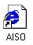
Gambar 2
Shortcut AISO di desktop
- Dengan membuka program Internet
Explorer dan ketikkan alamat berikut http://localhost:8080/aiso
di address bar :
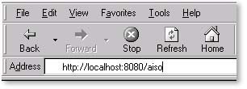
Gambar 3
Alamat aplikasi AISO di Internet Explorer
2.2 Login
User
harus mengisi username dan password di tempat yang disediakan di
layar login :
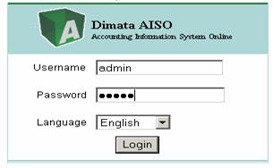
Gambar 4
Layar Login
2.3 Menu Utama
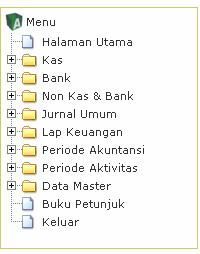
Gambar 5
Menu Utama
Menu Utama AISO
menggambarkan keseluruhan modul-modul AISO. Menu utama terdiri dari :
- Halaman Utama, menu ini merujuk ke halaman utama
aplikasi AISO.
- Kas, menu ini merujuk ke proses penjurnalan
atas Transaksi yang berkaitan dengan account Kas
- Bank, menu ini merujuk ke Proses perjurnalan
atas transaksi yang berkaitan dengan account Bank
- Non Kas & Bank , menu ini merujuk ke Proses
penjurnalan atas transaksi yang berkaitan dengan account Non Kas &
Bank , yaitu Hutang
- Jurnal Umum , menu untuk
merujuk ke proses penjurnalan atas transaksi yang account di luar kas,
bank, hutang seperti yang di sebutkan diatas.
- Laporan Keuangan , menu ini merujuk ke laporan-laporan
keuangan yang ada dalam AISO
- Periode, menu ini merujuk ke setting periode
akuntasi.
- Periode Aktivitas , menu ini merujuk ke setting periode
Aktivitas
- Data Master, menu ini merujuk ke bagian master data
yang mendefinisikan data-data referensi.
- Buku Petunjuk , menu ini merujuk ke buku manual yang
memberikan bantuan kepada bagi user
- Keluar , menu ini digunakan untuk keluar dari
aplikasi AISO.
2.4 Kas
Modul ini digunakan untuk melakukan pencatatan transaksi – transaksi yang berkaitan dengan Kas , seperti Penerimaan Kas Besar,dan Transaksi yang berkaitan dengan Kas Keci,lsecara langsung pada sistem Akuntansi berdasarkan bukti – bukti yang ada . Modul ini bisa di akses dengan meng-Klik “ Kas ”
2.4.1 Penerimaan
Modul Penerimaan digunakan untuk mencatat transaksi yang berkaitan dengan Penerimaan Kas
Langkah - langkah menjurnal transaksi Penerimaan Kas sebagai berikut :
v
Klik “
Penerimaan “
v
Klik “
Tambah Jurnal “
v
Inputkan data - data penerimaan pada kolom yang
tersedia , seperti contoh terlihat pada gambar.

v
Klik Simpan
dan Tambah Detail untuk menyimpan data.
v
Inputkan daftar perinciannya pada kolom yang
tersedia seperti nama departemen , nama aktivitas, jenis mata uang, kurs , jumlah
penerimaan , dan catatan jika diperlukan.
v
Klik Simpan
Detail, untuk menyimpan jurnal
detail
v
Klik Posting
Jurnal , untuk memposting jurnal penerimaan kas.
Untuk Mengedit Jurnal Penerimaan Kas , dengan Langkah-Langkah :
v Dari Halaman Daftar Jurnal , Pilih No Jurnal yang akan di edit.
v Jika hanya akan mengubah data header journal, maka ubah data headernya kemudian klik “Simpan Jurnal” maka data jurnal akan tersimpan kembali.
v Jika akan mengubah informasi Daftar detail journal, maka klik nama aktivitas yang akan diubah, kemudian ganti dengan nama aktivitas yang lain , atau ubah data nama departemen , nama kontak dan atau saldonya. Klik “Simpan detail”.
v Kemudian klik “Posting Jurnal” dan data jurnal terbaru akan tersimpan.
Untuk
Menghapus Jurnal Penerimaan Kas , dengan Langkah- Langkah :
v
Dari halaman daftar Jurnal , Pilih No Jurnal yang
akan dihapus.
v Klik “Hapus Jurnal”, akan muncul pesan “Yakin hapus Jurnal“ Klik “Ok” untuk menghapus jurnal atau “Cancel” untuk membatalkannya.
2.4.2
Kas Kecil
Modul ini di gunakan untuk mencatat transaksi yang berkaitan dengan penggunaan kas Kecil atau pengeluaran Kas Kecil.
Langkah-langkah menjurnal Transaksi Kas Kecil sebagai berikut :
v Klik “ Kas Kecil “.
v
Klik “Tambah
Jurnal “.
v Inputkan data - data kas kecil pada kolom yang tersedia , seperti contoh terlihat pada gambar.
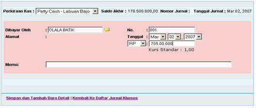
v
Klik Simpan
dan Tambah Detail untuk menyimpan data.
v
Inputkan daftar perinciannya pada kolom yang
tersedia seperti nama departemen ,nama aktivitas,jenis mata uang,kurs , jumlah
transaksi kas kecil , dan catatan jika di perlukan.
v
Klik Simpan Detail.
v
Klik Posting
Jurnal , untuk memposting jurnal kas Kecil.
Untuk Mengedit Jurnal Kas Kecil , dengan Langkah-Langkah :
v Dari Halaman Daftar Jurnal , Pilih No Jurnal yang akan di edit.
v Jika hanya akan mengubah data header journal, maka ubah data headernya kemudian klik “Simpan Jurnal” maka data jurnal akan tersimpan kembali.
v Jika akan mengubah informasi Daftar detail journal, maka klik salah satu nama aktivitas yang akan diubah, kemudian ganti dengan nama aktivitas yang lain , atau ubah data nama departemen , nama kontak dan atau saldonya. Klik “Simpan detail”.
v Kemudian klik “Posting Jurnal” dan data jurnal terbaru akan tersimpan.
Untuk
Menghapus Jurnal Kas Kecil , dengan Langkah- Langkah :
v
Dari halaman daftar Jurnal , Pilih No Jurnal yang
akan dihapus.
v Klik “Hapus Jurnal”, akan muncul pesan “Yakin hapus Jurnal“ Klik “Ok” untuk menghapus jurnal atau “Cancel” untuk membatalkannya.
2.5 Bank
Modul ini digunakan untuk
melakukan pencatatan transaksi – transaksi yang berkaitan dengan Bank, seperti
Setoran , Penarikan, Pengisian Kas Kecil , Transfer, Pendanaan, Pembayaran secara
langsung pada sistem Akuntansi berdasarkan bukti – bukti yang ada . Modul ini
bisa di akses dengan meng-Klik “ Bank”.
2.5.1 Setoran
Modul Setoran di gunakan untuk mencatat transaksi yang berkaitan dengan Setoran Bank
Langkah - langkah menjurnal transaksi Setoran Bank sebagai berikut :
v
Klik “ Setoran
“.
v
Klik “ Tambah
Jurnal “.
v
Inputkan data - data setoran pada kolom yang
tersedia , seperti contoh terlihat pada gambar.
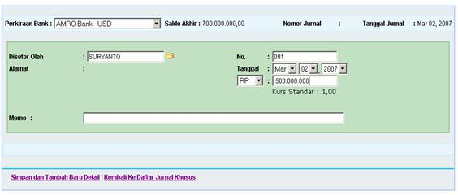
v
Klik Simpan
dan Tambah Detail untuk menyimpan data.
v
Inputkan daftar perinciannya pada kolom yang
tersedia seperti nama departemen ,nama aktivitas, jenis mata uang, kurs ,
jumlah setoran dan catatan jika di perlukan.
v
Klik Simpan
Detail.
v
Klik Posting
Jurnal , untuk memposting jurnal setoran bank.
Untuk Mengedit Jurnal Setoran Bank , dengan Langkah-Langkah :
v Dari Halaman Daftar Jurnal , Pilih No Jurnal yang akan di edit.
v Jika hanya akan mengubah data header journal, maka ubah data headernya kemudian klik “Simpan Jurnal” maka data jurnal akan tersimpan kembali.
v Jika akan mengubah informasi Daftar detail journal, maka klik salah satu nama aktivitas yang akan diubah, kemudian ganti dengan nama aktivitas yang lain , atau ubah data nama departemen , nama kontak dan atau saldonya. Klik “Simpan detail”.
v Kemudian klik “Posting Jurnal” dan data jurnal terbaru akan tersimpan.
Untuk
Menghapus Jurnal Setoran Bank , dengan Langkah- Langkah :
v
Dari halaman daftar Jurnal , Pilih No Jurnal yang
akan dihapus.
v Klik “Hapus Jurnal”, akan muncul pesan “Yakin hapus Jurnal“ Klik “Ok” untuk menghapus jurnal atau “Cancel” untuk membatalkannya.
2.5.2 Penarikan
Modul Penarikan di gunakan untuk mencatat transaksi yang berkaitan dengan Penarikan Saldo Bank.
Langkah - langkah menjurnal transaksi Penarikan Saldo Bank sebagai berikut :
v
Klik “ Penarikan
“.
v
Klik “
Tambah Jurnal “.
v
Inputkan data - data Penarikan pada kolom yang tersedia , seperti contoh
terlihat pada gambar.
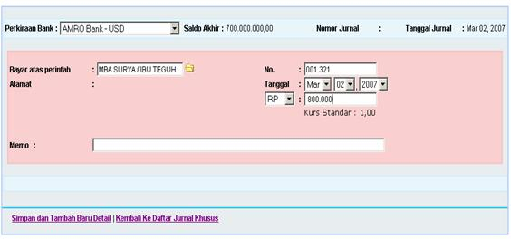
v
Klik Simpan
dan Tambah Detail untuk menyimpan data.
v
Inputkan daftar perinciannya pada kolom yang
tersedia seperti nama departemen ,nama aktivitas,jenis mata uang,kurs , jumlah
Penarikan dan catatan jika di perlukan.
v
Klik “Simpan
Detail”
v
Klik Posting
Jurnal , untuk memposting jurnal Penarikan Saldo Bank.
Untuk Mengedit Jurnal Penarikan Saldo Bank , dengan Langkah-Langkah :
v Dari Halaman Daftar Jurnal , Pilih No Jurnal yang akan di edit.
v Jika hanya akan mengubah data header journal, maka ubah data headernya kemudian klik “Simpan Jurnal” maka data jurnal akan tersimpan kembali.
v Jika akan mengubah informasi Daftar detail journal, maka klik salah satu nama aktivitas yang akan diubah, kemudian ganti dengan nama aktivitas yang lain , atau ubah data nama departemen , nama kontak dan atau saldonya. Klik “Simpan detail”.
v Kemudian klik “Posting Jurnal” dan data jurnal terbaru akan tersimpan.
Untuk
Menghapus Jurnal Penarikan Saldo Bank ,
dengan Langkah- Langkah :
v
Dari halaman daftar Jurnal , Pilih No Jurnal yang
akan dihapus.
v Klik “Hapus Jurnal”, akan muncul pesan “Yakin hapus Jurnal“ Klik “Ok” untuk menghapus jurnal atau “Cancel” untuk membatalkannya.
2.5.3
Pengisian Kas Kecil
Modul Pengisian di gunakan untuk mencatat transaksi yang berkaitan dengan Pengeluaran Saldo Bank yang di gunakan untuk pengisian Kas Kecil
Langkah - langkah menjurnal transaksi Pengisian Kas Kecil sebagai berikut :
v
Klik “ Pengisian
“
v
Klik “
Tambah Jurnal “
v
Inputkan data - data Pengisian kas kecil pada kolom yang tersedia , seperti contoh
terlihat pada gambar
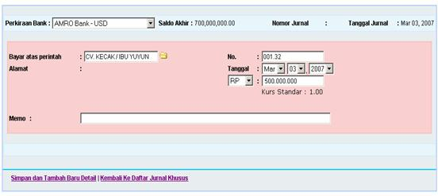
v
Klik Simpan
dan Tambah Detail untuk menyimpan data
v
Inputkan daftar perinciannya pada kolom yang
tersedia seperti nama departemen ,nama aktivitas,jenis mata uang,kurs , jumlah
Pengisian kas kecil dan catatan jika di
perlukan.
v
Klik Simpan Detail
, untuk menyinpan jurnal detailnya
v
Klik Posting
Jurnal , untuk memposting jurnal Pengisian Kas Kecil
Untuk Mengedit Jurnal Pengisian kas Kecil , dengan Langkah-Langkah :
v Dari Halaman Daftar Jurnal , Pilih No Jurnal yang akan di edit.
v Jika hanya akan mengubah data header journal, maka ubah data headernya kemudian klik “Simpan Jurnal” maka data jurnal akan tersimpan kembali.
v Jika akan mengubah informasi Daftar detail journal, maka klik salah satu nama aktivitas yang akan diubah, kemudian ganti dengan nama aktivitas yang lain , atau ubah data nama departemen , nama kontak dan atau saldonya. Klik “Simpan detail”.
v Kemudian klik “Posting Jurnal” dan data jurnal terbaru akan tersimpan.
Untuk
Menghapus Jurnal Pengisian Kas Kecil ,
dengan Langkah- Langkah :
v
Dari halaman daftar Jurnal , Pilih No Jurnal yang
akan dihapus.
v Klik “Hapus Jurnal”, akan muncul pesan “Yakin hapus Jurnal“ Klik “Ok” untuk menghapus jurnal atau “Cancel” untuk membatalkannya.
2.5.4
Transfer
Modul Transfer di gunakan untuk mencatat transaksi yang berkaitan dengan Pen-Transferan Saldo Bank ke Bank lainnya.
Langkah - langkah menjurnal transaksi Transfer sebagai berikut :
v
Klik “ Transfer
“.
v
Klik “
Tambah Jurnal “.
v
Inputkan data - data Transfer pada kolom yang
tersedia , seperti contoh terlihat pada gambar.
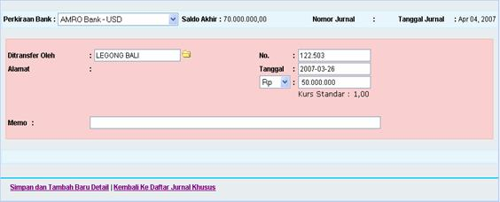
v Klik Simpan dan Tambah Baru Detail untuk menyimpan data.
v
Inputkan daftar perinciannya pada kolom yang
tersedia seperti nama departemen ,nama aktivitas,jenis mata uang,kurs , jumlah
uang yang di transfer dan catatan jika
di perlukan.
v
Klik Simpan Detail.
v Klik Posting Jurnal , untuk memposting jurnal Transfer.
Untuk Mengedit Jurnal Transfer , dengan Langkah-Langkah :
v Dari Halaman Daftar Jurnal , Pilih No Jurnal yang akan di edit.
v Jika hanya akan mengubah data header journal, maka ubah data headernya kemudian klik “Simpan Jurnal” maka data jurnal akan tersimpan kembali.
v Jika akan mengubah informasi Daftar detail journal, maka klik salah satu nama aktivitas yang akan diubah, kemudian ganti dengan nama aktivitas yang lain , atau ubah data nama departemen , nama kontak dan atau saldonya. Klik “Simpan detail”.
v Kemudian klik “Posting Jurnal” dan data jurnal terbaru akan tersimpan.
Untuk
Menghapus Jurnal Transfer, dengan Langkah- Langkah :
v
Dari halaman daftar Jurnal , Pilih No Jurnal yang
akan dihapus.
v Klik “Hapus Jurnal”, akan muncul pesan “Yakin hapus Jurnal“ Klik “Ok” untuk menghapus jurnal atau “Cancel” untuk membatalkannya.
2.5.5
Pendanaan
Modul Pendanaan digunakan untuk mencatat
transaksi yang berkaitan dengan Penerimaan dana dari Donatur perusahaan
Langkah-langkah menjurnal transaksi Pendanaan sebagai berikut :
v Klik “
Pendanaan”.
v Klik “Tambah
Jurnal”.
v Inputkan Data-data
pendanaan pada kolom ynag tersedia,seperti contoh terlihat pada gambar.
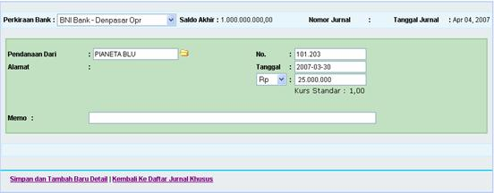
v Klik Simpan dan Tambah Baru Detail untuk menyimpan data.
v
Inputkan daftar perinciannya pada kolom yang
tersedia seperti nama departemen ,nama aktivitas, jenis mata uang, kurs, jumlah
Dana yang di terima dan catatan yang diperlukan.
v
Klik Simpan
Detail.
v Klik Posting Jurnal, untuk memposting jurnal Pendanaan.
Untuk Mengedit Jurnal Pendanaan, dengan Langkah-Langkah :
v Dari Halaman Daftar Jurnal , Pilih No Jurnal yang akan di edit.
v Jika hanya akan mengubah data header journal, maka ubah data headernya kemudian klik “Simpan Jurnal” maka data jurnal akan tersimpan kembali.
v Jika akan mengubah informasi Daftar detail journal, maka klik salah satu nama aktivitas yang akan diubah, kemudian ganti dengan nama aktivitas yang lain , atau ubah data nama departemen , nama kontak dan atau saldonya. Klik “Simpan detail”.
v Kemudian klik “Posting Jurnal” dan data jurnal terbaru akan tersimpan.
Untuk
Menghapus Jurnal Pendanaan, dengan Langkah- Langkah :
v
Dari halaman daftar Jurnal , Pilih No Jurnal yang
akan dihapus.
v Klik “Hapus Jurnal”, akan muncul pesan “Yakin hapus Jurnal“ Klik “Ok” untuk menghapus jurnal atau “Cancel” untuk membatalkannya.
2.5.6
Pembayaran
Modul Pembayaran digunakan untuk mencatat transaksi pembayaran hutang
Langkah-langkah menjurnal transaksi Pembayaran yaitu sebagai berikut :
v
Klik “Pembayaran
“
v
Klik
“Tambah Jurnal “
v
Inputkan Data-data Pembayaran pada kolom yang
tersedia,seperti contoh terlihat pada gambar berikut :
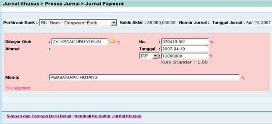
v Klik “Simpan dan
Tambah Detail “ untuk menyimpan data
v Inputkan daftar
perinciannya pada kolom yang tersedia seperti nama departemen ,nama aktivitas,
jenis mata uang, kurs, jumlah pembayaran hutang dan catatan yang diperlukan
v Klik “Simpan Detail “ untuk menyimpan jurnal
detailnya
v Klik “Posting Jurnal” untuk memposting
jurnal
Untuk Mengedit Jurnal Pembayaran, dengan Langkah-Langkah :
v Dari Halaman Daftar Jurnal , Pilih No Jurnal yang akan di edit.
v Jika hanya akan mengubah data header journal, maka ubah data headernya kemudian klik “Simpan Jurnal” maka data jurnal akan tersimpan kembali.
v Jika akan mengubah informasi Daftar detail journal, maka klik salah satu nama aktivitas yang akan diubah, kemudian ganti dengan nama aktivitas yang lain , atau ubah data nama departemen , nama kontak dan atau Jumlah pembayarannya, kemudian Klik “Simpan detail”.
v Kemudian klik “Posting Jurnal” dan data jurnal terbaru akan tersimpan.
Untuk
Menghapus Jurnal Pembayaran, dengan Langkah- Langkah :
v
Dari halaman daftar Jurnal , Pilih No Jurnal yang
akan dihapus.
v Klik “Hapus Jurnal”, akan muncul pesan “Yakin hapus Jurnal“ Klik “Ok” untuk menghapus jurnal atau “Cancel” untuk membatalkannya.
2.6 Non Kas dan Bank
Modul ini digunakan untuk
melakukan pencatatan transaksi – transaksi yang berkaitan dengan Non Kas dan
Bank, seperti Transaksi Hutang secara langsung pada sistem Akuntansi
berdasarkan bukti – bukti yang ada . Modul ini bisa di akses dengan meng-Klik “ Non Kas dan Bank”.
2.6.1
Non Kas dan Bank
Modul ini di gunakan untuk mencatat transaksi yang berkaitan dengan Non Kas dan Bank,yaitu Pencatatan Hutang
Langkah-Langkah menjurnalan Transaksi ini adalah sebagai berikut :
v
Klik “Non
Kas dan Bank “
v
Klik “Tambah
Jurnal”
v
Inputkan Data-data Pembayaran pada kolom yang
tersedia,seperti contoh terlihat pada gambar berikut :
2.7 Jurnal Umum
Sebagai sistem yang mandiri, AISO digunakan untuk
pencatatan transaksi seperti pembelian, produksi, penjualan dan pencatatan
persediaan termasuk biaya-biaya operasional seperti biaya transport, listrik,
telepon, air dan lain-lain secara langsung pada Sistem Akuntansi berdasarkan
bukti yang ada. Modul ini bisa diakses dengan meng-klik “Jurnal Umum”
dari menu utama.
Modul ini dipakai untuk mencatat transaksi keuangan yang terjadi di
perusahaan. Semua data-data keuangan yang ada harus melalui proses penjurnalan
terlebih dahulu, yang kemudian AISO akan memprosesnya menjadi laporan keuangan.
Untuk menjurnal sebuah transaksi baru, ikuti langkah-langkah berikut :
v Klik “ Jurnal
Umum”
v
Klik
“Tambah Jurnal” pada List Jurnal.
v
Ketik informasi yang disediakan pada kolom.
- Tipe
Pembukuan,
menunjukkan jenis mata uang yang akan digunakan dalam penjurnalan (Otomatis)
- No Voucher, menunjukkan nomor jurnal. Empat angka
pertama menunjukkan tahun dan bulan transaksi dilakukan. Empat angka
terakhir yang menunjukkan urutan jurnal dalam satu periode yang
bersangkutan (otomatis).
- Tanggal
Input, menunjukkan
tanggal pada saat dilakukan penjurnalan (otomatis).
- Nama Operator, menunjukkan nama user yang melakukan proses
penjurnalan sesuai dengan login ID ke AISO (otomatis).
- Departemen, menunjukkan
departemen transaksi penjurnalan.
- Dokumen Referensi, menunjukkan No
dari dokumen transaksi.
- Transaksi
dalam, menunjukkan
satuan mata uang yang dipakai (IDR atau $US).
- Tanggal
Transaksi,
menunjukkan tanggal transaksi (berdasarkan bukti transaksi).
- Kontak, menunjukkan nama kontak yang terlibat
dalam transaksi ini (Diambil dari data referensi Contact baik company maupun personnel).
- Keterangan Jurnal, menunjukkan penjelasan mengenai transaksi tersebut.
v Setelah semua informasi di-input lalu klik “Tambah Baru Detail” untuk menambahkan data detail jurnal yaitu account yang terlibat dan saldonya masing-masing.
v Setiap penambahan suatu detail jurnal, akan ada pesan tulisan (berwarna merah) yang menunjukkan apakah jurnal sudah seimbang atau belum.
v
Jika jurnal sudah
seimbang, klik “Posted Jurnal” untuk menyimpan jurnal atau klik “Kembali
Ke Daftar Jurnal” untuk kembali ke Daftar Jurnal tanpa menyimpan jurnal
yang baru ditambah.
Untuk meng-edit
jurnal, ikuti langkah-langkah berikut :
v Dari halaman daftar jurnal, pilih Voucher No yang akan di-edit.
v Jika hanya akan mengubah data header journal, maka ubah data headernya kemudian klik “Posted Jurnal” maka data jurnal akan tersimpan kembali.
v Jika akan mengubah informasi Daftar detail journal, maka klik salah satu account yang akan diubah, kemudian ganti dengan account yang lain dan atau saldonya. Klik “Ubah Detail”. Jika jurnal sudah seimbang, maka bisa langsung di-posted dengan meng-klik “Posted Jurnal” dan data jurnal terbaru akan tersimpan.
Untuk menghapus
jurnal, ikuti langkah-langkah berikut :
v Dari halaman daftar jurnal, pilih Voucher No yang akan di-edit.
v Klik “Hapus Jurnal”, akan muncul pesan “Are you sure to delete journal main ?”. Klik “Ya Hapus Jurnal” untuk menghapus jurnal atau “Batal” untuk membatalkannya.
2.8 Laporan
Modul ini menyajikan laporan keuangan sesuai dengan data jurnal yang ada. Modul ini bisa diakses dengan meng-klik “Report” pada menu utama. Sebagai catatan, untuk bisa melihat contoh dari laporan-laporan dalam modul ini, diperlukan program Adobe Acrobat Reader atau program lain yang bisa membaca file dengan ekstensi .pdf.
2.8.1 Laporan Utama
Laporan ini menyajikan posisi keuangan terupdate baik dari aliran kas, laba (rugi) serta keadaan aktiva perusahaan saat ini yang dapat dilihat pada neraca keuangan perusahaan.
2.8.1.1 Aliran Kas
Modul ini menyajikan laporan Aliran Kas (Cash Flow). Untuk melihat laporan Aliran Kas ini, lakukan langkah-langkah sebagai berikut:
v Pilih Periode Laporan yang diinginkan.
v Pilih Departemen yang akan dilihat laporannya.
v Klik “Tampilkan Laporan” untuk mendapatkan laporan yang diinginkan.
v Klik “Print Laporan” untuk mencetak laporan aliran kas.
v Klik “Export to Excel” untuk memindahkan data ke Ms. Excel.
Laporan ini menampilkan informasi saldo awal kas, kas masuk dan kas keluar sehingga dapat diketahui saldo akhir kas.
2.8.1.2 Laba (Rugi)
Modul ini menyajikan laporan Laba Rugi (Profit/Loss). Untuk melihat laporan Laba Rugi ini, ikuti langkah-langkah sebagai berikut :
v Pilih Periode Laporan yang diinginkan.
v Pilih Departemen yang akan dilihat laporannya.
v Klik “Tampilkan Laporan” untuk mendapatkan laporan yang diinginkan.
v Klik “Print Laporan” untuk mencetak laporan Laba (Rugi).
v Klik “Export to Excel” untuk memindahkan data ke Ms. Excel.
Laporan ini menampilkan infomasi pendapatan dan biaya dalam periode waktu yang dikehendaki. Selisih antara pendapatan dan biaya ini akan menjadi nilai laba/rugi.
2.8.1.3 Neraca
Modul ini menyajikan laporan Neraca. Untuk melihat laporan Neraca ini, ikuti langkah-langkah sebagai berikut :
v Pilih Periode Laporan yang diinginkan.
v Pilih Departemen yang akan dilihat laporannya.
v Klik “Tampilkan Laporan” untuk melihat laporan yang diinginkan.
v Klik “Print Laporan” untuk mencetak laporan neraca.
v Klik “Export to Excel” untuk memindahkan data ke Ms. Excel.
Laporan ini menunjukkan keadaan/posisi keuangan
perusahaan per periode yang dikehendaki. Keadaan keuangan ini ditunjukkan dengan jumlah harta
yang dimiliki (Activa) dan jumlah kewajiban dan ekuitas perusahaan (Pasiva).
2.8.2 Laporan Pendukung
2.8.2.1 Buku Besar
Modul ini menyajikan laporan Buku Besar (General Ledger). Untuk melihat Buku Besar suatu account, ikuti langkah-langkah sebagai berikut :
v Klik “Cari” untuk mendapatkan perkiraan yang dikehendaki.
v Pilih periode/rentang waktu yang diinginkan.
v Pilih departemen yang diinginkan.
v Klik “Tampilkan Laporan” untuk melihat laporan yang diinginkan.
2.8.2.2 Neraca Percobaan
Modul ini menyajikan laporan Neraca Percobaan (Trial Balance). Untuk melihat laporan Neraca Percobaan ini, ikutilah langkah-langkah sebagai berikut :
v Pilih Periode laporan yang diinginkan.
v Pilih Departemen yang akan dilihat laporannya.
v Klik “Tampilkan Laporan” untuk melihat laporan yang diinginkan.
v Klik “Print Laporan” untuk mencetak laporan langsung ke printer.
v Klik “ Export to Excel” untuk memindahkan data ke Ms. Excel.
Laporan
ini menampilkan informasi saldo dari semua account yang postable yaitu saldo
awal, mutasi dan saldo akhir sesuai dengan tanggal yang dipilih.
2.8.2.3 Neraca Lajur
Modul ini menyajikan laporan Neraca Lajur. Untuk melihat laporan Neraca Lajur ini, ikuti langkah-langkah sebagai berikut :
v Pilih Periode Laporan yang diinginkan.
v Pilih Departemen yang akan dilihat laporannya.
v Klik “Tampilkan Laporan “ untuk melihat laporan yang diinginkan.
v Klik “ Print Laporan” untuk mencetak laporan Neraca Lajur.
v
Klik “
Export to Excel” untuk memindahkan data ke Ms. Excel.
2.9 Periode
Modul ini digunakan untuk memproses data-data mendasar dalam proses akuntansi seperti setup periode (Setup Period) dan proses tutup buku (Close Book). Modul ini bisa diakses dengan meng-klik “Periode” dari menu utama. Data-data ini akan mempengaruhi proses akuntansi secara keseluruhan baik jurnal, laporan dan lain-lain.
2.9.1 Setup Periode
Sebenarnya aplikasi AISO sudah secara otomatis
membuat periode sesuai dengan data konfigurasi periode yang disimpan pada
variabel periode di dalam sub modul Application Setting (modul System).
Jadi, modul ini hanya digunakan untuk mengubah beberapa field data untuk
periode seperti :
v
Last entry, menunjukkan tanggal terakhir entry data pada
periode bersangkutan.
v
Name, menunjukkan nama periode yang bersangkutan.
v
Description, menunjukkan informasi tambahan untuk periode
yang besangkutan.
Untuk melihat
status periode yang masih open maupun yang telah closed, klik “Awal, Akhir,Maju,Mundur” maka akan
ditampilkan status periode yang dibutuhkan.
Untuk meng-edit data suatu periode, klik salah
satu Period Name. Maka akan ditampilkan form period editor sesuai dengan
pilihan tadi. Lakukan pengeditan data sesuai dengan kebutuhan, kemudian klik “Simpan”
untuk menyimpan kembali.
2.9.2 Tutup Buku
Pada akhir periode akuntansi, kita harus melakukan
tutup buku (close book). Tujuan tutup buku adalah menutup semua
transaksi yang terjadi pada periode akuntansi yang ditutupbukukan. Jadi semua
transaksi yang ada dalam rentang waktu periode tersebut hanya bisa dibaca saja
(read only). Ini dilakukan untuk menjaga konsistensi data transaksi per
masing-masing periode. Selain menutupbukukan periode, proses tutup buku juga
akan secara otomatis membuat periode baru sesuai dengan data konfigurasi
periode yang disimpan pada variabel periode di dalam sub modul Application
Setting (modul System).
Untuk melakukan proses tutup buku, klik “Tutup
Buku”, atau Klik “Batal” untuk membantalkan proses tutup buku.
2.10
Master Data
Modul master data digunakan untuk mendefinisikan data-data master/referensi yang nantinya akan digunakan oleh modul-modul lainnya dalam aplikasi AISO. Modul ini bisa diakses dengan meng-klik “Master Data” dari menu utama. Modul master data mempunyai beberapa bagian diantaranya :
2.10.1 Data Perkiraan (Account)
Modul data perkiraan adalah data master utama yang dipakai dalam proses akuntansi. Di sini didefinisikan daftar perkiraan dan link perkiraan. Data-data ini akan dipakai hampir di seluruh aplikasi AISO.
2.10.1.1 Daftar Perkiraan (Account Chart)
Account akan diinput di modul ini, yang kemudian akan
dijadikan acuan dibagian Journal dan Report. Data account dikelompokkan
menjadi 8 bagian yaitu :
v Aktiva (Activa) : diawali
dengan angka 1
v Hutang (Liability) :
diawali dengan angka 2
v Ekuitas (Equity) : diawali
dengan angka 3
v Pendapatan (Income) :
diawali dengan angka 4
v Harga pokok penjualan
(Cost of Goods Sold) : diawali dengan angka 5
v Biaya (Expenses) : diawali
dengan angka 6
v Pendapatan lain-lain
(Other income) : diawali dengan angka 7
v Biaya lain-lain (Other
expenses) : diawali dengan angka 8
Klik “Daftar Perkiraan” untuk melihat daftar perkiraan dari masing-masing
account diatas,
Untuk membuat account baru
tentukan kelompok account terlebih dahulu, kemudian ikuti langkah-langkah
berikut :
v
Klik
“Tambah Perkiraan”.
v
Ketik informasi yang disediakan pada kolom.
§
Induk
perkiraan, menunjukkan
induk dari account yang akan kita tambahkan.
§
Nama
perkiraan, menunjukkan
nama account.
§
Nomor
perkiraan, menunjukkan
nomor account. Angka pertama di-set otomatis sesuai dengan kelompok
account-nya, kemudian diikuti dengan nomor account sesuai dengan format
penomoran perusahaan masing-masing.
§
Anggaran
Perkiraan, menunjukkan jumlah anggaran yang disediakan untuk account tersebut.
Untuk merubah jumlah anggaran,klik “edit anggaran”
§
Level, menunjukkan level account. AISO
menyediakan sampai 6 level account. Level 1 akan menjadi induk dari level 2,
level 2 akan menjadi induk dari level 3 dan begitu seterusnya.
§
Saldo
Normal, menunjukkan
apakah suatu acount bertambahnya di debet atau di kredit.
§
Status,
menunjukkan apakah suatu
account bisa dijurnal atau tidak. Jika bisa dijurnal pilih postable, jika tidak
pilih header.
v Setelah semua informasi dimasukkan, klik “Simpan Perkiraan” untuk menyimpan informasi tersebut. Untuk melihat account yang sudah ada, klik “awal, akhir, maju, mundur “.
2.10.1.2 Link Perkiraan (Account Link)
Modul ini dipakai untuk mendefinisikan hubungan antara suatu account dengan account lainnya dalam kaitannya dengan pembuatan Report. Jenis-jenis account link yang ada adalah sebagai berikut :
v Kas :
Pada bagian ini, kita mendefinisikan account-account yang termasuk/dianggap kas. Account link ini akan digunakan dalam pembuatan laporan aliran kas atau Cash Flow Report. Account-account yang akan muncul di laporan aliran kas adalah account-account tandingan dari account-account yang didefinisikan di sini sesuai dengan data jurnal yang ada. Account link ini harus diisi karena akan mempengaruhi laporan aliran kas.
v Bank :
Pada bagian ini, kita mendefinisikan account-acount bank dimana account link ini harus diisi karena akan mempengaruhi laporan aliran kas.
v Laba Rugi Periode Berjalan :
Account ini akan menyimpan nilai laba/rugi tiap-tiap periode akuntansi. Account ini akan muncul di laporan Laba/Rugi. Account ini harus diisi karena akan mempengaruhi laporan aliran laba/rugi.
v Laba Rugi Tahun Berjalan :
Pada bagian ini, kita mendefinisikan account yang mempunyai pengertian sama dengan “Laba Tahun Berjalan”. Account ini akan menyimpan nilai akumulasi laba dari periode akuntasi pertama sampai yang terakhir. Account ini akan muncul di laporan neraca atau Balance Sheet Report. Account link ini harus diisi karena akan mempengaruhi laporan neraca.
v Laba Ditahan :
Pada bagian ini, kita mendefinisikan laba operasi yang belum dibagikan
kepada pemilik perusahaan. Account ini akan mempengaruhi laporan keuangan
perusahaan.
2.10.2
Data Perusahaan
Modul ini dipakai untuk mendefinisikan data-data perusahaan/badan yang menggunakan aplikasi AISO ini utamanya data pegawai yang akan menjadi data acuan dalam proses jurnal disamping data-data perusahaan lainnya yang mendukung seperti departemen, posisi dan lain-lain.
2.10.2.1 Departemen
Modul ini digunakan untuk mendefinisikan data
departemen yang ada di perusahaan yang nantinya akan dijadikan referensi untuk
data pegawai.
v
Klik “Tambah Departemen” untuk menambah data
departemen baru. Maka akan ditampilkan form department editor untuk
menginputkan departemen baru tersebut. Masukkan data sesuai dengan tempat yang
disediakan. Setelah selesai penginputan data, klik “Simpan Department”
untuk menyimpan data tersebut.
v
Klik salah satu Departement untuk meng-edit data
departemen. Maka akan ditampilkan form department editor sesuai dengan pilihan
tadi. Lakukan pengeditan data sesuai dengan kebutuhan, kemudian klik “Simpan
Department” untuk menyimpan kembali.
v
Untuk menghapus data department, klik salah satu Departement.
Maka akan ditampilkan form department editor sesuai dengan pilihan tadi. Klik “Delete
Department” akan muncul pesan “Anda yakin Menghapus Departemen ?”.
Klik “Ya Hapus Department”
untuk menghapusnya dan “Kembali ke
daftar Department” untuk kembali ke daftar departemen.
2.10.2.2
Data Pembayaran
Modul ini digunakan untuk mendefinisikan data pembayaran yang digunakan
dalam transaksi di perusahaan yang
nantinya akan dijadikan referensi untuk laporan keuangan.
2.10.2.2.1 Tipe
Mata Uang
Pada bagian ini,
ditampilkan jenis mata uang yang dipergunakan baik itu mata uang rupiah maupun
mata uang internasional yang diakui dan sah untuk dipergunakan dalam setiap
transaksi.
v
Klik “Tambah jenis Mata Uang” untuk menambah data
mata uang baru. Maka akan ditampilkan form position editor untuk menginputkan
jenis mata uang baru. Masukkan data sesuai dengan tempat yang disediakan.
Setelah selesai penginputan data, klik “Simpan Jenis Mata Uang” untuk
menyimpan data tersebut.
v
Klik salah satu Position untuk meng-edit jenis
mata uang. Maka akan ditampilkan form position editor sesuai dengan pilihan
tadi. Lakukan pengeditan data sesuai dengan kebutuhan, kemudian klik “Simpan
jenis mata uang ” untuk menyimpan kembali.
v
Untuk menghapus data position, klik salah satu Position.
Maka akan ditampilkan form position editor sesuai dengan pilihan tadi. Klik “Delete
Position” akan muncul pesan “Anda yakin akan menghapus ?”.
Klik “Ya Hapus jenis mata uang”
untuk menghapusnya dan “Kembali ke
daftar jenis mata uang” untuk kembali ke daftar jenis mata uang.
2.10.2.2.2 Kurs
Standar
Pada bagian ini,
ditampilkan nilai tukar / Kurs dari setiap mata uang yang dipakai dalam
transaksi. Nilai Tukar ini dapat di update setiap harinya sesuai dengan data
yang ada pada standar bank Indonesia.
v
Klik
“ Tambah Kurs Standar”untuk menambah data nilai tukar uang yang baru.
Masukkan data sesuai dengan format yang disediakan. Setelah selesai
penginputan,klik “Simpan Kurs Standar” untuk menyimpan data tersebut.
v
Klik
salah satu Position untuk mengedit nilai kurs mata uang. Masukkan data sesuai
dengan format yang disediakan. Klik”Simpan Kurs Standar” untuk menyimpan
kembali. Dan jika ingin menghapus data tersebut, klik “Hapus Kurs Standar”akan
muncul pesan “Anda yakin akan menghapus?”, Klik “Ya,hapus kurs
standar” untuk menghapusnya dan “Kembali ke Daftar Kurs Standar”
untuk kembali ke daftar Kurs Standar.
3 Serba-Serbi
3.1 Apa yang harus saya lakukan ?
3.1.1 Menjalankan Aplikasi AISO
User bisa menjalankan aplikasi AISO dengan beberapa cara yaitu :
- Klik shortcut AISO di desktop
- Buka program Internet Explorer dan ketikkan alamat berikut http://localhost:8080/aiso address bar:
Jika anda mendapatkan layar login seperti di bawah ini berarti ada kesalahan yang terjadi.
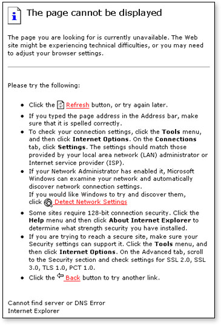
Gambar 6 Layar pesan kesalahan
Pesan di atas artinya server aplikasi tidak hidup dan bisa disebabkan oleh beberapa hal seperti :
1. Komputer server tidak hidup
2. Komputer server hidup tetapi server aplikasi (tomcat) tidak hidup.
3. Komputer server dan server aplikasi hidup, tetapi ada sesuatu yang membuat computer anda tidak terhubung ke server seperti masalah jaringan.
Silakan minta bantuan System Administrator dan atau staf EDP untuk memecahkan masalah anda.